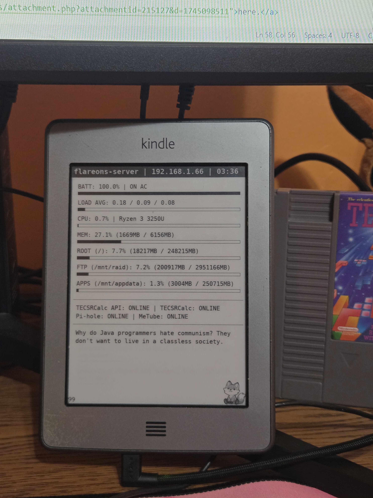

Sorry if this is a yap fest and somewhat unintelligible! I suppose that's what you get for reading from the Scratchpad tho!
I had this Kindle Touch laying in a box unused for the past months or maybe even year, having moved on to using my tablet for reading, and ultimately not reading at all in recent times. I was thinking, there's gotta be a way to repurpose it, right? The new Kindles run Android.. which was simple, but I wasn't sure about this one.
Re-enactment
So I did some research and luckily, these 2012 Kindles can be modded. It was the first time I was doing softmodding without a proper guide, being used to *.hacks.guide pages. So I turned to the dark side... AI...
It started off well, providing me with common resources like MobileRead forums.
But the good times stopped there, it already gave me false information, telling me to create folders---essentially hallucinating a way to jailbreak, wasting me an hour or so trying to figure it out.. before I decided enough with AI for now and just do my own research.
After finishing the jailbreak and ssh-ing into my Kindle, I needed to figure out how to make a cronjob for a dashboard. The normal command cronjob -e didn't work, erroring out. So I once again decided to ask AI... just another waste of time.
It wanted me to remove the crontab directory to make my own crontab file in place of it, which I immediately knew was a bad idea and a potential brick waiting to happen. So I gave up on AI again and just used the paths it gave me to figure stuff out. I ended up finding out that cronjobs are just located under /etc/crontab/root and it was fairly simple to edit and add my own.
After a bit of programming and tinkering, I ended up making a dashboard for my server which I feel like ended up quote nice. The Kindle only has about a two day battery now, but, it is better than sitting in a closet at 0% for its entire life.

Kindle propped under my monitor for a quick view on my server in-case it's gonna blow.
Honestly, I should give this kindle credit, it's surprisingly crisp and legible for being an 600x800 screen. There's plenty of space for server stats and even a small joke at the bottom :p
TBH, there were many videos on how to jailbreak Kindles, but I personally just.. didn't wanna watch any since I really don't like watching videos like that, instead opting for text guides. So here's a text guide if you ever find yourself in a situation like mine!